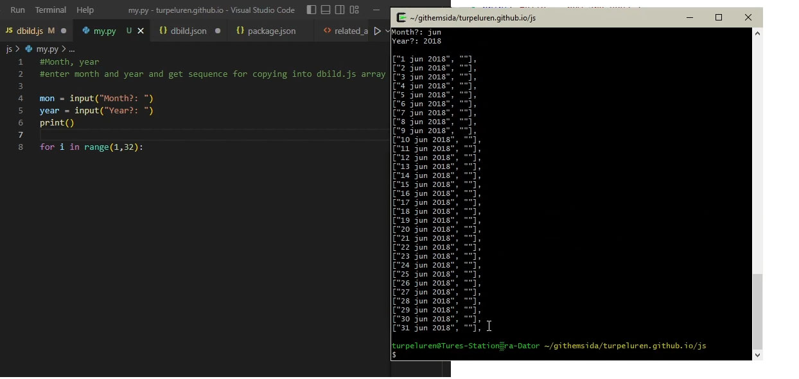
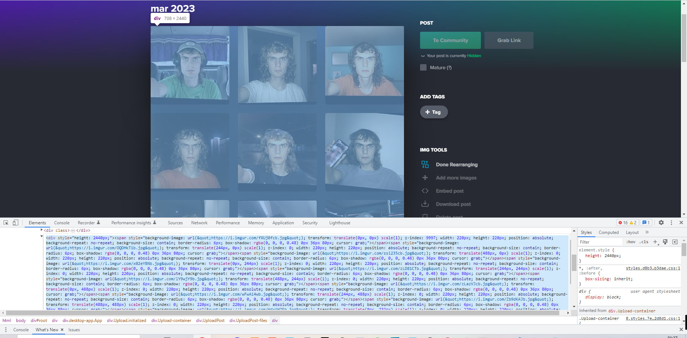
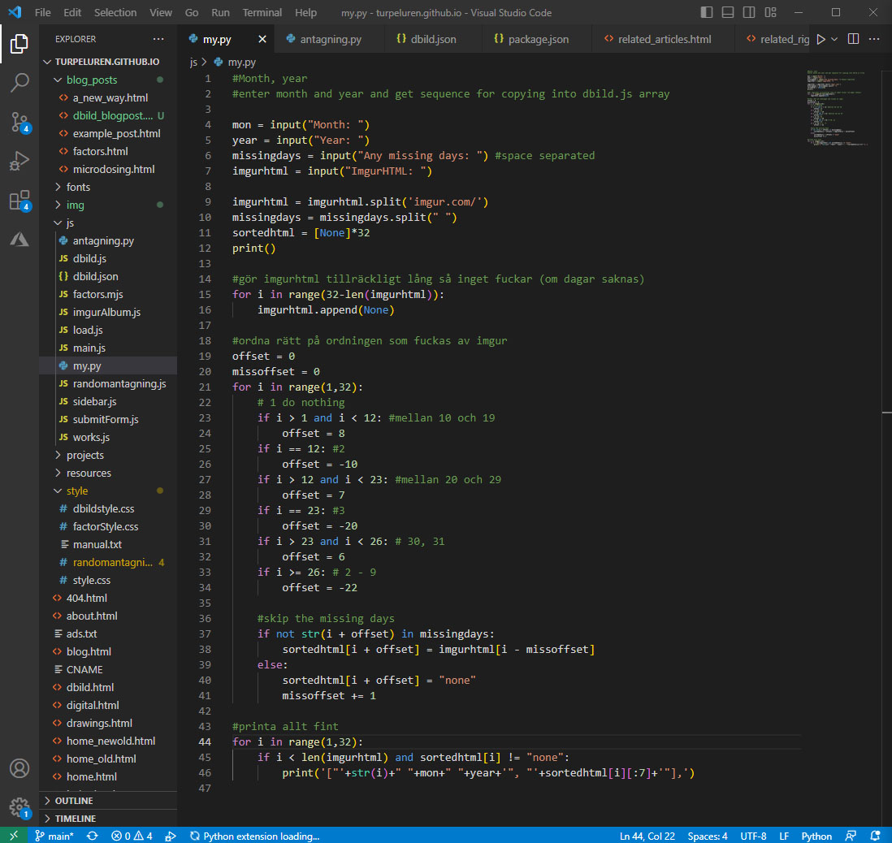

A mosaic of my face in the player
Check it out!The player has support for flipping one image at a time, playing at desired fps and dragging across the timeline.
It also has an option in the settings menu for onionskin time, which means the time it takes to fade into the next image. Highly recommend to play around with this setting.
Open the settings menu with "s", play with Space or flip one image with the arrow keys.
I first got this idea while streaming the process of stabilising the images (which I do manually in Photoshop). Since the files on my computer are organised in folders like year/month/day I though it wouldn't be too hard to have a pointer of the same format and display a correct image.
I realized there was no way I could upload all the (over 1800) images to my own website. As of now I am hosting this via github pages where a 5GB storage limit is "strongly recommended" whatever that means. My site is already over 1GB and the pictures of the day are about 6GB in total. So just uploading them to github would not be a long term solution.
Next step was then to use an image hosing service, and I already had some of the pictures uploaded to google drive in the same handy folder organisation. When I looked into it, however, there is no way to automatically fetch the url of an image in google drive according to file hierarcy. Each file is just given their own random string as url and that is the only way to get the image link.
I couldn't find any image hosting which did what I wanted and had easy-to-access urls. So, I just started uploading some images to imgur, pasting the individual urls in an array in my Javasript file. The iea was to just put a long list with all the urls ready to access for my website program. But to get all the urls in place I had to manually upload each image and copy the url to the file, even adding the date by hand.
With just a few images I got the code working for the player. Adding the onion skin fade effect and seeing the player work really made me want to finish the project.
So I started uploading and adding the first few months of images manually. It took forever so I decided to just automate my own writing of the dates in the array. Each line looked like this:
["day month year", "ImgurUrl"],
I did a quick python script to generate a months worth of lines for me to paste the urls into.
After this, my process was super bottle-necked only by the uploading of images to Imgur and copying their urls. I started to upload one month at a time to an album and noticed the order, (which I had first thought was random and affected only by the upload speed of each image,) followed 1 10 11... 2 20 21.. 3 30 31 4 5 6... Now when I knew there was a pattern to the order I could inspect the elements on the web page, copy the HTML data and with some python string splicing extract the url parts I needed. Then it was just a matter of getting them in the right order.
I expanded the python program to take the raw HTML as input and now it was spitting out a full month of organised array code for my Javascript file. 60 months with this method did not feel as much as now when I am realizing it was 60 months... But using the algorithm felt very rewarding and I got the site running with all the pictures in no time.
The finished python program